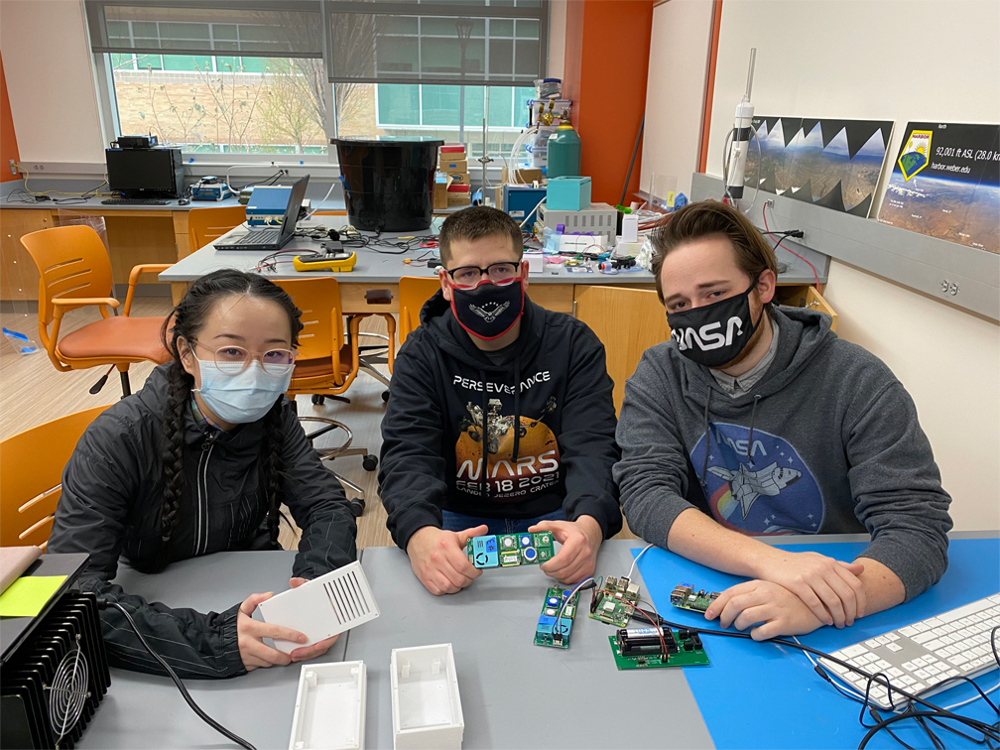
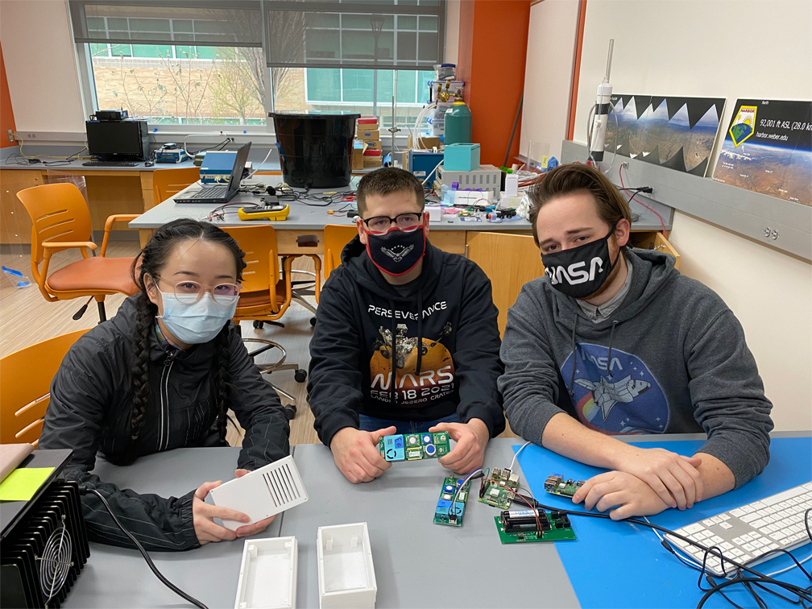

Planetary Rocket Simulation
 

Project Members
In January of 2020, I began working on a miniature multi-sensor array (mini-MSA) for my HARBOR research group. I was one of three individuals working on the project. I mainly worked on the software/sensor side of things. Drew Huber, our electrical engineering major worked on the soldering for the battery powerboard and the wire connectors, and occasionally software. Huiling Renee Xie, our mechanical engineering major worked on the housing for the project. The three of us were supervised by Dr. John Sohl and given occasional advice by Sohl and Jeffery Page.
MSA Overview
The MSA (formally known as the mini-MSA) was created with the intention of making a sensing device that was both cheap and uniform. Currently, many measurements made of the atmosphere across the United
States (and the world really) aren't really uniform because everyone is using different devices which are all calibrated differently. We hope with the MSA that issue will be mostly solved by making a cheap,
but accesssible device for everyone.
The MSA itself is comprised of a Raspberry Pi 3 B+, a custom made external powerboard, a winsen multi-sensor unit, and a custom made housing. The Raspberry Pi hosts the Python written software that runs and controls MSA.
MSA Software
Developing the software for the MSA really pushed my python programming skills to the limit. I had to learn UART serial in order to translate the bytes into readable data from the sensors.
Then, we had
to solve the problem of actually running the script while the Raspberry Pi wasn't connected to a monitor and keyboard. I ultimately decided on setting up the Raspberry Pi as a WiFi access point,
and then having it host a flask webserver which hosted a basic html website. On that website, you could click the "Start" button which would run the data collection script. Additionally,
I added buttons for stopping the data collection, and downloading the data from the Raspberry Pi.

MSA Housing
Renee worked on the housing until she graduated in Spring 2021. We never got a fully functioning housing before she left, just a few prototypes that were screwed up by the 3D printer.
A housing is still being worked on by another individual, but for now we've resorted to the plastic tuperware housing that you see in the picture at the top of the page.
MSA Presentations
Our team did two presentations this spring for the MSA. One for the Air Quality Science For Solutions Conference and another for the NASA Space Grant Consortium.
Air Quality Science for Solutions on the right. NASA Space Grant Consortium on the left.